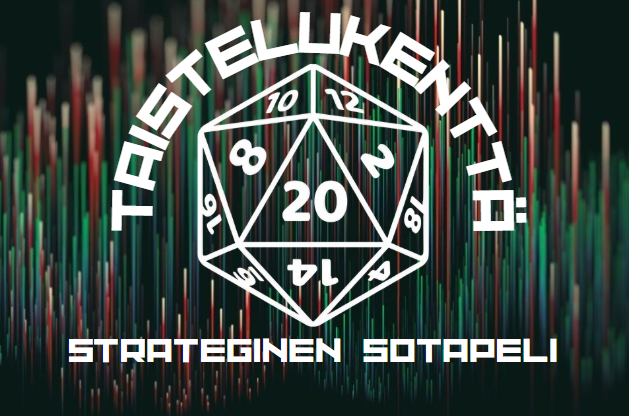

1. Johdanto Uudistettuun Taistelukenttä d20 -Peliin
1.1 Pelin Uusi Visio ja Tavoitteet
Tervetuloa Taistelukenttä d20: Moderni Konflikti – Suomi vs. Venäjä -sotapelin uudistettuun laitokseen. Tämä sääntöjärjestelmä on merkittävästi laajennettu ja syvennetty versio alkuperäisestä Taistelukenttä d20 -pelistä. Alkuperäisen pelin visiona oli simuloida modernia sodankäyntiä yleisellä joukkue-, komppania- ja pataljoonatasolla. Tämä uudistettu versio ottaa kunnianhimoisemman suunnan: se on suunniteltu toimimaan yksityiskohtaisena ja realistisena simulaattorina nimenomaan Suomen Puolustusvoimien (Sininen tiimi) ja Venäjän Asevoimien (Punainen tiimi) välisestä mahdollisesta konfliktista.
Pelin keskiössä on pyrkimys autenttisuuteen. Tämä tarkoittaa paitsi todellisiin organisaatioihin ja kalustoon perustuvia yksiköitä, myös kummankin osapuolen sotilasdoktriinien ja taktisten toimintatapojen mallintamista pelimekaniikkojen kautta. Pelin tavoitteena ei ole ainoastaan tarjota viihdyttävää ja haastavaa sotapelikokemusta, vaan myös antaa pelaajille syvällisempi ymmärrys modernin sodankäynnin monimutkaisuudesta kyseisten toimijoiden välillä.
Sodan sumu, epätäydellinen informaatio ja komentajien päätöksenteko paineen alla ovat edelleen keskeisiä elementtejä, mutta nyt ne asetetaan tarkasti määriteltyyn geopoliittiseen ja sotilaalliseen viitekehykseen. Menestys vaatii huolellista suunnittelua, resurssienhallintaa, joukkojen tehokasta johtamista ja kykyä sopeutua nopeasti muuttuviin tilanteisiin taistelukentällä, joka heijastelee todellisia uhkia ja valmiuksia.
1.2 Keskeiset Muutokset Aiempaan Versioon
Tämä uudistettu laitos eroaa edeltäjästään useilla merkittävillä tavoilla, jotka on suunniteltu vastaamaan pelin uutta, tarkemmin kohdennettua visiota:
- Laajennetut ja Yksityiskohtaiset Yksikköluettelot: Alkuperäisen pelin perusyksiköt on korvattu kattavilla ja tarkoilla yksikkökuvauksilla sekä Suomen että Venäjän asevoimille. Nämä perustuvat saatavilla olevaan tietoon kummankin maan nykyisestä kalustosta ja organisaatiosta. Tämä tarkoittaa uusien yksiköiden, kuten Leopard 2A6 -taistelupanssarivaunujen, CV9030FIN-rynnäkköpanssarivaunujen, K9 Thunder -telahaupitsien Suomelle, sekä T-90M-taistelupanssarivaunujen, BMP-3-rynnäkköpanssarivaunujen ja Pantsir-S1-ilmatorjuntajärjestelmien Venäjälle, lisäämistä peliin.
- Uudet Säännöt Edistyneelle Aseteknologialle: Pelimekaniikkoja on laajennettu kattamaan modernin sodankäynnin erityispiirteitä, kuten panssarintorjuntaohjukset (esim. Spike ja Kornet), itseliikkuvat ilmatorjuntajärjestelmät (SPAAG), itseliikkuvat tykistöjärjestelmät (SPH) ja niiden erikoisampumatarvikkeet.
- Tarkemmat Komento- ja Hallintamekaniikat: Komentopistejärjestelmää ja komentajan toimintoja on päivitetty heijastamaan paremmin nykyaikaisen C4ISR-kyvykkyyden (Command, Control, Communications, Computers, Intelligence, Surveillance, and Reconnaissance) vaikutusta taistelukentällä.
- Osapuolikohtaiset Doktriinisäännöt: Peliin on lisätty sääntöjä ja kykyjä, jotka mallintavat Suomen ja Venäjän sotilasdoktriinien keskeisiä piirteitä, antaen kummallekin osapuolelle omanlaisensa taktisen luonteen.
- Syvennetty Tiedustelu ja Informaatiosota: Tiedustelun ja tilannekuvan merkitystä on korostettu, ja sääntöihin on lisätty elementtejä, jotka kuvaavat informaation hallinnan tärkeyttä.
1.3 d20-Järjestelmän Soveltaminen Moderniin Sodankäyntiin
Taistelukenttä d20: Moderni Konflikti säilyttää ytimessään tutun d20-noppajärjestelmän, joka on peräisin Dungeons & Dragons 5e -roolipelistä ja jota sovellettiin jo pelin alkuperäisessä versiossa. Tämä järjestelmä, jossa onnistuminen perustuu tyypillisesti $d20$-nopanheittoon lisättynä erilaisilla modifikaattoreilla verrattuna kohdelukuun (DC), tarjoaa joustavan ja intuitiivisen perustan monenlaisten tilanteiden ratkaisemiseen.
Modernin sodankäynnin monimutkaisuus, johon kuuluvat esimerkiksi kehittyneet sensorijärjestelmät, ohjatut aseet, elektroninen sodankäynti ja monimutkaiset panssarointiratkaisut, vaatii kuitenkin perusjärjestelmän merkittävää laajentamista ja soveltamista. Tämä uudistettu versio ei tyydy pelkkään abstraktiin $d20$ + Taitotaso (TT) vastaan Suoja (S) -mekaniikkaan. Sen sijaan $d20$-järjestelmää käytetään pohjana, jonka päälle rakennetaan yksityiskohtaisempia alijärjestelmiä.
Esimerkiksi panssarintorjuntaohjuksen osuminen ja vaikutus voivat sisältää useampia heittoja ja tarkistuksia kuin perinteisen kiväärin laukaus, ottaen huomioon ohjuksen ohjausjärjestelmän, kohteen vastatoimet ja panssarin tyypin. Tavoitteena on yhdistää $d20$-järjestelmän helppokäyttöisyys ja satunnaisuuden hallinta modernin sodankäynnin vaatimaan syvyyteen ja tarkkuuteen, luoden näin pelikokemuksen, joka on sekä mukaansatempaava että simulaatioarvoltaan korkea.
2. Ydinsääntöjen Muutokset ja Tarkennukset
Tässä osiossa käsitellään Taistelukenttä d20 -pelin ydinsääntöihin tehtyjä muutoksia ja tarkennuksia, jotka ovat välttämättömiä modernin Suomen ja Venäjän välisen konfliktin simuloimiseksi realistisesti. Nämä muutokset perustuvat alkuperäisen pelin rakenteeseen, mutta laajentavat sitä merkittävästi.
2.1 Komentojärjestelmä ja Komentopisteet (KP)
Komentopisteet (KP) säilyvät komentajan keskeisimpänä resurssina, kuvastaen hänen johtamiskykyään ja taktista aloitteellisuuttaan. KP-pisteiden generointi perustuu edelleen komentajan tasoon, mutta sitä on hienosäädetty:
- Joukkueenjohtaja: 3 KP / vuoro
- Komppanianpäällikkö: 5 KP / vuoro
- Pataljoonan komentaja (suuremmissa skenaarioissa): 7 KP / vuoro
Käyttämättömät KP:t haihtuvat edelleen vuoron lopussa. Perustoiminnot, kuten asemissa puolustaminen tai ennalta suunniteltu liike, eivät kuluta KP:itä. Aktiiviset ja vaativat toiminnot sen sijaan edellyttävät KP:iden käyttöä. Alkuperäisiä KP-toimintoja on laajennettu ja muokattu vastaamaan modernin sodankäynnin vaatimuksia ja C4ISR-järjestelmien (Command, Control, Communications, Computers, Intelligence, Surveillance, and Reconnaissance) tuomia mahdollisuuksia. Nämä uudet toiminnot heijastavat informaation merkitystä ja erikoistuneiden tukimuotojen koordinointia, jotka ovat keskeisiä nykyaikaisille doktriineille.
| Toiminto | Hinta (KP) | Kuvaus | Huomioita |
|---|---|---|---|
| Hyökkäyskäsky | 1 KP / ryhmä | Käske ryhmää aktiivisesti hyökkäämään tai rynnäköimään. | Perustuu 1 |
| Tulen Keskittäminen | 1 KP | Kaikki tähän komentoon osallistuvat ryhmät saavat +1 bonuksen hyökkäysheittoihinsa kyseistä maalia vastaan tällä vuorolla. | Perustuu 1 |
| Irtautuminen | 2 KP / ryhmä | Käske taistelukontaktissa olevaa ryhmää vetäytymään hallitusti. | Perustuu 1 |
| Moraalin Kohotus | 2 KP | Poista "Lamautunut"-tila yhdeltä omalta yksiköltä. | Perustuu 1 |
| Koordinoitu Tulitukipyyntö | 3 KP (perus) + 1 KP per lisäyksikkö | Tee pyyntö epäsuorasta tulesta (krh, tykistö) useammalta tulitukiyksiköltä samaan maaliin tai alueelle. Vähentää hajontaa tai lisää vaikutusta. | Laajennus 1, mahdollistaa esim. krh- ja tykistökeskityksen synkronoinnin. |
| Sensoritehtävä | 2 KP | Anna yhdelle yksikölle merkittävä (+2 - +4) bonus sen seuraavaan Tiedusteluheittoon tai salli erikoissensorin (esim. lämpökamera pimeässä) täysimääräinen hyödyntäminen. | Uusi toiminto, heijastaa modernien sensoreiden 8 merkitystä. |
| Elektronisen Sodankäynnin (EW) Toimi | 2-4 KP | Aktivoi EW-yksikön häirintä-, kuuntelu- tai harhautuskyky. Vaikutukset riippuvat EW-järjestelmästä. | Uusi toiminto, perustuu informaatiosodan 1 laajennukseen ja Venäjän doktriinin 6 painotuksiin. |
| Tarkka Iskupyyntö | 4 KP | Pyydä erittäin tarkkaa, mutta rajoitettua iskua yksittäistä arvokasta maalia vastaan. Vaatii yleensä suoran näköyhteyden tai tarkan maalinosoituksen. | Uusi toiminto, mallintaa modernien täsmäaseiden käyttöä. |
| Erikoiskyvyn käyttö | Vaihtelee | Monien yksiköiden erityiskyvyt vaativat KP:n käyttöä. | Perustuu 1 |
| Komppanian Taktiikat | Vaihtelee (2-5 KP) | Komppanianpäällikön käytössä olevat laajemmat taktiset käskyt. | Perustuu 1, voidaan laajentaa osapuolikohtaisilla taktiikoilla. |
Komentoyhteyden säännöt ja komentoketjun katkeamisen seuraukset pysyvät pääosin voimassa, mutta niiden merkitys korostuu entisestään modernilla taistelukentällä, jossa kommunikaatioylivoima on avainasemassa.
2.2 Pelivuoron Vaiheet
Pelivuoron vaiheet noudattavat alkuperäisen pelin rakennetta, sillä se tarjoaa loogisen ja dynaamisen tavan mallintaa samanaikaisia toimintoja. Vaiheet ovat:
- Komentovaihe: Pelaajat (ja Pelinjohtaja salassa) päättävät yksiköidensä toiminnoista ja käyttävät tähän Komentopisteitä. Kaikki päätökset tehdään tässä vaiheessa.
- Liikevaihe: Kaikki liikkuviksi määrätyt yksiköt siirretään kartalla.
- Tiedusteluvaihe: Tiedustelua suorittavat yksiköt tekevät testinsä. Pelinjohtaja paljastaa havaitut viholliset.
- Tulitoimintavaihe: Kaikki Komentovaiheessa annetut tulikomennot ovat samanaikaisia ja ne ratkaistaan yhtä aikaa. Tämä tarkoittaa, että vaikka yksikkö tuhoutuisi, se ehtii ampua oman laukauksensa tällä vuorolla. Kaikki tappiot ja tilaefektit astuvat voimaan vasta Tilannevaiheessa.
- Tilannevaihe: Vahinkoa kärsineet yksiköt tekevät moraalitestit. Tilaefektit päivitetään. Vuoro päättyy.
Keskeinen periaate "kaikki tulikomennot ovat samanaikaisia" säilytetään pelin sujuvuuden ja tasapainon vuoksi. Kuitenkin modernien, erittäin nopeasti reagoivien asejärjestelmien ja sensorien aikakaudella "ensimmäisen laukauksen" merkitys on korostunut. Tämän huomioimiseksi voidaan harkita seuraavia tarkennuksia Tulitoimintavaiheeseen:
- Aloitejärjestys tietyille järjestelmille: Yksiköt, joilla on erityisen kehittyneet sensorit tai "fire-and-forget" -tyyppiset aseet, voivat saada pienen bonuksen aloiteheittoon. Korkeimman tuloksen saanut yksikkö voi ratkaista oman tulitoimintonsa ensin kyseisellä vuorolla, jos se kohdistuu yksikköön, joka ei ole vielä toiminut.
- Vastatoimet (Countermeasures): Tietyt järjestelmät, kuten aktiiviset puolustusjärjestelmät (APS) panssarivaunuissa, voivat saada reaktiona toimia Tulitoimintavaiheessa, kun niitä vastaan hyökätään.
Nämä mekanismit pyrkivät mallintamaan teknologista etua ilman, että pelivuoron rakenne monimutkaistuu liikaa.
2.3 Taistelumekaniikat
Taistelun ratkaiseminen on sotapelin ytimessä. Alkuperäisen pelin perusmekaniikkaa on laajennettu huomattavasti kattamaan modernin aseistuksen moninaisuus ja vaikutukset.
2.3.1 Suora Tuli
Suoran tulen säännöt perustuvat edelleen hyökkääjän heittoon ($d20$ + Taitotaso (TT) + muut modifikaattorit) vastaan kohteen Suoja (S). Merkittävin muutos on "Tuli-isku (TI)" -arvon korvaaminen asekohtaisilla vahinko- ja läpäisyarvoilla sekä erikoissäännöillä.
- Kanuunat (Panssarivaunu- ja Rynnäkköpanssarivaunukanuunat): Taistelupanssarivaunujen kanuunoilla, kuten Leopard 2A6:n 120mm tai T-90M:n 125mm, on korkeat läpäisyarvot (PEN) ja huomattava Tuli-isku (TI). Autokanuunat, kuten CV9030FIN:n 30mm, ovat tehokkaita kevyempiä ajoneuvoja vastaan ja niillä on usein korkeampi tulinopeus (RoF). BMP-3:n 100mm kanuuna on erikoistapaus, joka voi ampua myös panssarintorjuntaohjuksia.
- Panssarintorjuntaohjukset (ATGM): Järjestelmät kuten Suomen Spike-sarja ja Venäjän Kornet-EM ovat erittäin tehokkaita. Niillä on ominaisuuksia kuten "Fire-and-forget" (ampuja voi siirtyä laukaisun jälkeen) tai SACLOS (ampuja pitää tähtäimen maalissa). Monet modernit ATGM:t käyttävät "Top-Attack"-profiilia iskeäkseen panssarivaunun heikommin panssaroituun kattoon. Niillä on erittäin korkea läpäisy ja pitkä kantama.
- Konekiväärit ja Kranaattikonekiväärit: Käytetään ensisijaisesti jalkaväen lamauttamiseen. Aiheuttavat vähemmän TK-vahinkoa, mutta voivat pakottaa kohteet Moraalitesteihin. Raskaat konekiväärit voivat olla uhka kevyille ajoneuvoille.
Jokaisella asejärjestelmällä yksikkökortilla on omat arvonsa: Kantama, Hyökkäysbonus, Läpäisy (PEN), Tuli-isku (TI), Tulinopeus (RoF) ja Erikoisominaisuudet.
2.3.2 Panssari ja Läpäisy
Alkuperäisen pelin yksiulotteinen "Suoja (S)" -arvo ei riitä kuvaamaan modernien panssariajoneuvojen suojaustasoa. Uudistetussa pelissä otetaan käyttöön seuraavat parannukset:
- Moniosainen Panssarointi: Jokaisella panssaroidulla yksiköllä on erilliset Suoja-arvot eri suunnille: Etu, Sivu, Taka ja Katto.
- Asekohtainen Läpäisy (PEN): Osuman jälkeen aseen PEN-arvoa verrataan kohteen tulosuunnan Suoja-arvoon. Jos PEN ≥ Suoja, osuma läpäisee ja aiheuttaa vahinkoa.
- Panssarityypit ja Erikoissäännöt:
- Komposiittipanssari: Tarjoaa hyvän perussuojan sekä kineettisiä että kemiallisia ammuksia vastaan.
- Explosive Reactive Armour (ERA): Antaa merkittävän lisäsuojan erityisesti HEAT-ammuksia vastaan. ERA voi neutraloida osuman kokonaan tai vähentää sen PEN-arvoa, mutta on sen jälkeen "käytetty" kyseisestä kohdasta.
- Häkkipanssari (Cage/Slat Armour): Tarjoaa lisäsuojaa RPG-tyyppisiä sinkoaseita vastaan.
2.3.3 Epäsuora Tuli
Epäsuoran tulen sääntöjä on laajennettu. Ero orgaanisen (esim. komppanian omat 81mm krh, nopeampi ja tarkempi) ja epäorgaanisen (esim. pataljoonan 120mm krh tai prikaatin K9, voimakkaampi ja hitaampi) tuen välillä säilyy. Uusia elementtejä ovat:
- Ammustyypit: HE (High Explosive) sirpalekranaatti, jonka vaikutusalue riippuu kaliiperista. Savu näköesteen luomiseen ja Valaisu pimeyden poistamiseen. Termobaariset raketit (TOS-1A) aiheuttavat erittäin suurta vahinkoa laajalla alueella.
- Multiple Rounds Simultaneous Impact (MRSI): Modernit SPH:t (kuten K9 Thunder) kykenevät ampumaan useita kranaatteja, jotka iskeytyvät maaliin samanaikaisesti. Tämä voidaan mallintaa korkean KP-hinnan erikoiskäskyllä.
- Vastatykistötuli (Counter-battery Fire): Ampuva tykistöyksikkö paljastaa potentiaalisesti sijaintinsa ja voi joutua vastatulen kohteeksi. "Shoot and scoot" -taktiikka (liikkuminen heti ampumisen jälkeen) voi suojata tältä.
2.3.4 Ilmapuolustus
Tämä on uusi sääntömoduuli, koska alkuperäisessä pelissä ei ole ilmavoimien sääntöjä. Se keskittyy maasta-ilmaan-puolustukseen. Ilmatorjuntayksiköt, kuten Suomen ItPsv 90 Marksman ja Venäjän Pantsir-S1, kykenevät torjumaan ilmamaaleja.
Torjuntaprosessi sisältää:
- Havaitsiminen: Yksikkö tekee Tiedusteluheiton havaitakseen ilmamaalin. DC riippuu maalin ominaisuuksista.
- Lukitus ja Hyökkäys: Yksikkö hyökkää heittämällä $d20$ + TT vastaan ilmamaalin väistöarvo.
- Vahinko: Osuessaan ase tekee vahinkoa. Ohjukset tekevät paljon vahinkoa, mutta niitä on rajoitetusti.
Monet ilmatorjuntajärjestelmät voivat toimia rajoitetusti myös maakohteita vastaan.
2.3.5 Erityisaseet ja -järjestelmät
- Termobaariset Aseet (TOS-1A): Aiheuttavat erittäin suurta vahinkoa laajalla alueella (esim. 10-15 cm säde), erityisesti jalkaväkeä ja rakennelmia vastaan, ja aiheuttavat erittäin vaikean Moraalitestin (DC 15 tai Haitalla).
- Kehittyneet Tähtäimet (Lämpökamerat yms.): Antavat bonuksia pimeässä ja huonossa näkyvyydessä sekä helpottavat piiloutuneiden yksiköiden havaitsemista.
- Aktiiviset Puolustusjärjestelmät (APS): Voivat torjua lähestyviä ohjuksia ja sinkoja. Kun APS-varustettua ajoneuvoa vastaan hyökätään, heitetään $d20$, ja tietyllä tuloksella (esim. 12+) uhka torjutaan. APS:llä voi olla rajoitettu määrä latauksia.
2.4 Moraali ja Tilaefektit
Moraalisääntöjä on syvennetty huomioimaan modernin sodankäynnin psykologisia vaikutuksia. Alkuperäisten syiden lisäksi moraalitestejä voivat aiheuttaa:
- Joutuminen täsmäaseen kohteeksi (DC 11).
- Ystävällisen raskaan yksikön tuhoutumisen näkeminen (DC 13).
- Tehokas elektroninen häirintä (DC 10-12).
- Termobaarisen aseen vaikutusalueella oleminen (DC 15 tai Haitalla).
Tilaefektit "Vaurioitunut", "Lamautunut" ja "Vetäytyy" säilyvät. Uusia harkittavia efektejä ovat "Häiritty" (-2 kaikkiin heittoihin) ja "Sensorivaurio" (Haitat tiedustelu- ja hyökkäysheittoihin).
2.5 Tiedustelu, Tilannekuva ja Informaatiosota
Informaation hallinta on elintärkeää. Havainnon tasot (Ei Havaintoa, Epäily, Tiedossa, Havaittu) säilyvät. Sensorityyppien vaikutusta on tarkennettu:
- Lämpökamerat/Yönäkölaitteet: Vähentävät pimeyden haittoja ja voivat antaa bonuksen jalkaväen havaitsemiseen lämpöjäljen perusteella.
- Tutkat: Havaitsevat kohteita pitkiltä etäisyyksiltä, mutta ovat alttiita häirinnälle.
Elektronisen sodankäynnin (EW) perusmekaniikat on hahmoteltu, mahdollistaen signaalihäirinnän, sensorihäirinnän ja signaalitiedustelun.
2.6 Maaston Vaikutus
Alkuperäistä maastotaulukkoa on laajennettu kattamaan Suomen ja Itä-Euroopan tyypillisiä maastoja yksityiskohtaisemmin.
| Maastotyyppi | Liikevaikutus Ajoneuvoille | Liikevaikutus Jalkaväelle | Suojabonus (S) vs. Suora Tuli | Piiloutumisbonus (vs. Optinen/Lämpö) | Sensorivaikutus (Tutka/Lämpö) | Huomioita |
|---|---|---|---|---|---|---|
| Tie/Aukea | 100% | 100% | +0 | +0 | Ei vaikutusta | Perustuu 1 |
| Matala maasto (pelto, niitty) | 90% | 100% | +1 (maatuvat) / +2 (kumpuileva) | +2 | Lämpö: -1 (jos korkeaa kasvillisuutta) | Laajennus 1 |
| Metsä (harva) | 75% | 90% | +3 | +3 | Tutka: -2, Lämpö: -2 | |
| Metsä (tiheä) | 50% (tela-ajoneuvot), 25% (pyöräajoneuvot) | 75% | +4 - +5 | +4 - +5 | Tutka: -4, Lämpö: -4 | Perustuu 1, eritelty |
| Rakennus (kevyt, puu) | Ei kulkua (paitsi erikoisajoneuvot) | 50% (sisällä) | +4 | +6 | Tutka: LoS-esto, Lämpö: LoS-esto | Perustuu 1 |
| Rakennus (kestävä, kivi/betoni) | Ei kulkua | 50% (sisällä) | +6 - +8 | +8 | Tutka: LoS-esto, Lämpö: LoS-esto | Voi tarjota suojaa epäsuoralta tulelta. |
| Urbaani (tiheä, kadut) | 50% (vain teillä), erittäin hidas rakennusten välissä | 75% (kaduilla), 50% (rakennusten läpi) | +4 (kadulla), +6-+8 (rakennuksissa) | +6 | Tutka: Erittäin paljon katveita, Lämpö: Paljon häiriöitä | Kapeat ampumasektorit, hyvä väijytyksiin. |
| Teollisuusalue | 60% (alueella), hidas rakennusten välissä | 80% | +5 (ulkona), +7 (rakennuksissa) | +5 | Tutka: Paljon katveita, Lämpö: Lämpölähteitä voi hämätä | Suuret rakennelmat voivat tarjota hyvää suojaa. |
| Suo/Räme | 20% (tela, jos ylipäätään kulkukelpoinen), 0% (pyörä) | 50% | +1 (ei suojaa tulelta, mutta vaikeuttaa tähtäämistä) | +3 | Lämpö: Voi vaikeuttaa havaitsemista. | Erittäin vaikeakulkuista. |
| Vesistö (matala, ylitettävä) | Erikoissäännöt (amfibio, kahlaus) | Erikoissäännöt (uinti, kahlaus) | +0 | +0 | Liike hidasta, yksiköt haavoittuvia. | |
| Kaivanto/Potero | - | - | +5 (jalkaväelle) | +4 | Tarjoaa hyvän suojan jalkaväelle. |
3. Sininen Tiimi – Suomen Puolustusvoimat
Tämä osio keskittyy Suomen Puolustusvoimiin (Sininen tiimi), sen sotilasdoktriiniin, tyypilliseen taistelujärjestykseen pelin mittakaavassa sekä yksityiskohtaisiin yksikkökortteihin keskeisimmille joukoille ja kalustolle.
3.1 Doktriini: Totaalinen Maanpuolustus ja "Sisu"
Suomen sotilasdoktriinin ytimessä on käsite totaalisesta maanpuolustuksesta, joka tarkoittaa kaikkien yhteiskunnan resurssien valjastamista maanpuolustukseen kriisitilanteessa. Pelissä tämä ilmenee pyrkimyksenä hyödyntää Suomen ainutlaatuista maastoa, korostaen kevyen jalkaväen (jääkärien) taitoja. Keskeinen osa doktriinia on "Sisu", joka kuvastaa periksiantamattomuutta, korkeaa motivaatiota ja kykyä kestää vaikeuksia. Suomalainen taktiikka painottaa usein laatua määrän sijaan, maaston tehokasta hyödyntämistä ja asymmetrisiä toimintatapoja.
Doktrinaaliset piirteet voidaan mallintaa pelissä seuraavilla tavoilla:
- "Sisu": Suomalaisilla jalkaväkiyksiköillä on korkeampi perusmoraali tai kyky kestää paremmin tappioita.
- "Maaston Tuntemus": Suomalaiset yksiköt saavat bonuksia tietyissä maastotyypeissä, kuten metsässä.
- Erityiset Komentopistetoiminnot (Suomi): Kuten "Mottitaktiikka", "Häirintäisku" (isku ja irti -taktiikka) ja "Paikallisaloite", joka heijastaa alempien portaiden oma-aloitteisuutta.
3.2 Taistelujärjestys (Order of Battle – FDF)
Suomen Puolustusvoimien taistelujärjestys pelissä perustuu nykyaikaisiin organisaatiomalleihin, kuten Jääkärikomppania M05.
| Muodostelmatyyppi | Johtoelementit | Taisteluyksiköt (tyypillinen määrä) | Tukielementit (orgaaniset) | Kalustoesimerkkejä |
|---|---|---|---|---|
| Jääkärikomppania (M05-tyyppinen) | Kompp. Päällikkö, Varapäällikkö, Tulenjohtopäällikkö | 3x Jääkärijoukkuetta (kussakin 3x Jääkäriryhmä, Raskaskertasinkopartio, Tulenjohtopartio) | Komento- ja Tukijoukkue (Komento-, Tulituki- (81mm Krh), PST-ryhmät), Huoltojoukkue | RK62M/95TP, KES12, PKM, 81mm Krh, NLAW/Spike SR |
| Panssarijääkärikomppania (Mekanisoitu) | Kompp. Päällikkö (CV9030), Varapäällikkö | 3x Panssarijääkärijoukkuetta (kussakin 3-4x CV9030FIN ja 3-4x Panssarijääkäriryhmää) | Tukijoukkue (CV9030-pohjainen, voi sisältää PST-ohjusversion tai Krh-version) | CV9030FIN, RK62M/95TP, Spike LR/ER |
| Panssarikomppania | Kompp. Päällikkö (Leopard 2A6) | 3x Panssarijoukkuetta (kussakin 3-4x Leopard 2A6) | Huolto- ja tukielementti | Leopard 2A6 (tai 2A4) |
| Tykistöpatteri (Itseliikkuva) | Patterin Päällikkö, Tulenjohtue | 2-3x Tulijaosta (kussakin 2-3x K9 Thunder) | Ammusajoneuvot, tukielementit | K9 Thunder "Moukari" |
3.3 Yksikkökortit – Suomi
Seuraavassa esitellään esimerkkejä keskeisten suomalaisten yksiköiden ominaisuuskorteista. Oletusarvoisesti Koulutus (K) on +2 Jääkäreille ja ammattisotilaille.
JÄÄKÄRIRYHMÄ (Päivitetty)
- Tyyppi: Jalkaväki (9 miestä)
- TK: 10 | M: +3 (Sisulla +3 vaurioituneenakin) | S (Perus): 11 (ilman maastoa)
- Liike: 10 cm (Maasto), 10 cm (Metsä), 12 cm (Tie)
- TT (Koulutus +2, XP +0): +2
- Aseistus:
- RK 95 TP (7.62mm): Kantama 0-15/15-30/30-45cm. PEN: 1. TI: d6. RoF: 1.
- PKM Kevyt Konekivääri (1 kpl): Kantama 0-20/20-40/40-60cm. PEN: 2. TI: d8. Erikois: Lamauttava.
- KES 12 (66mm LAW) (2 kpl): Kantama 0-10/10-20cm. Hyökkäys: TT-1. PEN: 10 (HEAT). TI: 2d6. Erikois: Kertakäyttöinen.
- Kyvyt:
- Sisu: Kun yksikkö on "Vaurioitunut", sen Moraali pysyy +3.
- Maastoon Tottunut: Ei kärsi liikehidasteesta metsässä.
- Partisaanitaktiikat (1 KP): Voi yrittää piiloutua uudelleen ampumisen jälkeen metsässä tai rakennuksessa.
LEOPARD 2A6 (Taistelupanssarivaunu)
- Tyyppi: Ajoneuvo (Taistelupanssarivaunu) | Miehistö: 4
- TK: 45 | M: +4
- Suoja (S): Etu: 22, Sivu: 16, Taka: 10, Katto: 8 (Komposiittipanssari)
- Liike: 14 cm (Maasto), 18 cm (Tie)
- TT (Koulutus +2, XP +0): +2
- Aseistus:
- 120mm Rheinmetall L55 PSTVK:
- APFSDS-T (DM63): Kantama 0-30/30-60/60-90cm. Hyökkäys: TT+2. PEN: 25. TI: 3d10.
- HEAT-MP-T (DM12A1): Kantama 0-30/30-60/60-80cm. Hyökkäys: TT+1. PEN: 20 (HEAT). TI: 2d12. Aluevaikutus.
- 7.62mm Konekivääri (Koaksiaalinen & IT): Kantama 0-20/20-40cm. PEN: 2. TI: d8.
- 120mm Rheinmetall L55 PSTVK:
- Kyvyt:
- Kehittyneet Tähtäimet (Lämpökamera): Ei pimeyden haittoja, +2 Tiedusteluun pimeässä tai huonossa näkyvyydessä.
- Vakaaja: Voi ampua pääaseella liikkeestä ilman normaalia rangaistusta.
- Savunheittimet: Voi käyttää toiminnon luodakseen savuverhon.
CV9030FIN (Rynnäkköpanssarivaunu)
- Tyyppi: Ajoneuvo (Rynnäkköpanssarivaunu) | Miehistö: 3 + 8 Kuljetettavaa
- TK: 30 | M: +3
- Suoja (S): Etu: 15, Sivu: 12, Taka: 10, Katto: 6 (MEXAS-lisäpanssarointi)
- Liike: 16 cm (Maasto), 20 cm (Tie)
- TT (Koulutus +2, XP +0): +2
- Aseistus:
- 30mm Bushmaster II Autokanuuna: Kantama 0-20/20-40/40-50cm. RoF: 2.
- APFSDS-T: PEN: 12. TI: d10.
- HEI-T: PEN: 4. TI: d8. Aluevaikutus.
- 7.62mm PKMT Konekivääri (Koaksiaalinen): Kantama 0-20/20-40cm. PEN: 2. TI: d8.
- 30mm Bushmaster II Autokanuuna: Kantama 0-20/20-40/40-50cm. RoF: 2.
- Kyvyt:
- Kehittyneet Sensorit: Kuten Leopard 2A6.
- Jalkaväen Kuljetus: Voi kuljettaa yhden Jääkäriryhmän (8 miestä).
- Tulenjohtokyky: Voi toimia tulenjohtajana omalle tai muille yksiköille.
4. Punainen Tiimi – Venäjän Asevoimat
Tämä osio käsittelee Venäjän Asevoimia (Punainen tiimi), sen sotilasdoktriinia, tyypillistä taistelujärjestystä pelin mittakaavassa sekä yksityiskohtaisia yksikkökortteja keskeisimmille joukoille ja kalustolle.
4.1 Doktriini: Massa, Tulivoima ja Kehittyvät Taktiikat
Perinteisesti Venäjän sotilasdoktriini on painottanut massan keskittämistä, ylivoimaista tulivoimaa ja nopeaa offensiivista toimintaa. Viimeaikaisten konfliktien perusteella taktisessa ajattelussa on kuitenkin nähtävissä myös kehittyviä piirteitä, kuten pienempien, ketterämpien taktisten osastojen (BTG) käyttö, lennokkien laajempi hyödyntäminen ja elektronisen sodankäynnin merkityksen korostuminen.
Pelissä tämä kaksijakoisuus mallinnetaan seuraavilla tavoilla:
- "Massavaikutus": Jos useampi saman tyyppinen venäläinen yksikkö keskittää tulensa yhteen kohteeseen, ne voivat saada pienen bonuksen osumiseen tai vahinkoon.
- "Tulivalmistelu": Venäläisellä komentajalla voi olla kyky käyttää merkittävä määrä KP:itä kutsuakseen voimakkaan tykistökeskityksen ennen hyökkäystä.
- Erityiset Komentopistetoiminnot (Venäjä): Kuten "Massahyökkäys", "Tulituen Maksimointi" ja "Läpimurto", jotka tukevat offensiivista doktriinia.
4.2 Taistelujärjestys (Order of Battle – RuAF)
Venäjän Asevoimien taistelujärjestys pelin mittakaavassa heijastelee niiden tyypillistä organisaatiota moottoroiduissa jalkaväkiprikaateissa ja -divisiooneissa.
| Muodostelmatyyppi | Johtoelementit | Taisteluyksiköt (tyypillinen määrä) | Tukielementit (orgaaniset/liitetyt) | Kalustoesimerkkejä |
|---|---|---|---|---|
| Moottoroitu Jalkaväkikomppania (BMP-3) | Kompp. Päällikkö (BMP-3K) | 3x Moottoroitua Jalkaväkijoukkuetta (kussakin 3x BMP-3 ja 3x Mot. Jv. Ryhmää) | Konekiväärijaos, Krh-tuki (usein pataljoonasta) | BMP-3, AK-12, RPG-7/29, PKP Pecheneg |
| Moottoroitu Jalkaväkikomppania (BTR-82A) | Kompp. Päällikkö (BTR-82A) | 3x Moottoroitua Jalkaväkijoukkuetta (kussakin 3x BTR-82A ja 3x Mot. Jv. Ryhmää) | Kuten yllä | BTR-82A, AK-12, RPG-7/29, PKP Pecheneg |
| Panssarikomppania | Kompp. Päällikkö (T-90M/T-72B3M) | 3x Panssarijoukkuetta (kussakin 3x T-90M tai T-72B3M) (Yhteensä 10 vaunua) | Huolto- ja tukielementti | T-90M "Proryv", T-72B3M |
| Haupitsipatteristo (Itseliikkuva) | Patteriston Komentaja | 3x Tulipatteria (kussakin 6x 2S19 Msta-S) (Yhteensä 18 2S19 per patteristo) | Tulenjohto, ammusajoneuvot, tukielementit | 2S19/M1/M2 Msta-S |
| Raketinheitinpatteri (Raskas) | Patterin Päällikkö | 2-3x Tulijaosta (kussakin 2-3x TOS-1A) (Yhteensä 4-6 TOS-1A per patteri) | Ammusajoneuvot (TZM-T) | TOS-1A "Solntsepyok" |
| Ilmatorjuntaohjuspatteri (Lähi/Keskimatka) | Patterin Päällikkö | 2-3x Tulijaosta (kussakin 2-3x Pantsir-S1) (Yhteensä 4-6 Pantsir per patteri) | Tutka- ja johtoelementit | Pantsir-S1/S1M |
4.3 Yksikkökortit – Venäjä
Seuraavassa esimerkkejä keskeisten venäläisten yksiköiden ominaisuuskorteista. Oletusarvoisesti Koulutus on +1 perusjalkaväelle.
MOTORISOITU JALKAVÄKIRYHMÄ (Päivitetty)
- Tyyppi: Jalkaväki (8 miestä)
- TK: 10 | M: +2 (Aaltohyökkäyksellä +3 seuraavalla vuorolla) | S (Perus): 10
- Liike: 10 cm (Maasto), 12 cm (Tie)
- TT (Koulutus +1, XP +0): +1
- Aseistus:
- AK-12 (5.45mm): Kantama 0-15/15-30/30-45cm. PEN: 1. TI: d6. RoF: 1.
- PKP Pecheneg LMG (1 kpl): Kantama 0-20/20-40/40-60cm. PEN: 2. TI: d8. RoF: 1. Erikois: Lamauttava.
- RPG-29 "Vampir" (1 kpl, 2 ammusta): Kantama 0-15/15-30cm. PEN: 22 (HEAT Tandem). TI: 2d12. RoF: 1.
- Kyvyt:
- Peräänantamaton: Yksikkö ei tee ylimääräistä Moraalitestiä, kun se joutuu "Vaurioituneeksi".
- Aaltohyökkäys: Jos vähintään 3 Motorisoitua Jalkaväkiryhmää hyökkää samaan kohteeseen, ne saavat +1 Moraaliin seuraavalla vuorolla.
T-90M "PRORYV" (Taistelupanssarivaunu)
- Tyyppi: Ajoneuvo (Taistelupanssarivaunu) | Miehistö: 3
- TK: 50 | M: +5
- Suoja (S): Etu: 24 (Relikt ERA), Sivu: 18 (Relikt ERA), Taka: 12, Katto: 10
- Liike: 13 cm (Maasto), 17 cm (Tie)
- TT (Koulutus +2, XP +0): +2
- Aseistus:
- 125mm 2A46M-5 PSTVK:
- APFSDS-T (3BM60 "Svinets-2"): Kantama 0-30/30-60/60-90cm. Hyökkäys: TT+2. PEN: 26. TI: 3d10+2.
- ATGM (9M119M1 "Invar-M"): Kantama 0-40/40-70cm. Hyökkäys: TT+2. PEN: 24 (HEAT Tandem). TI: 2d12+2. Ohjattu (SACLOS).
- HE-FRAG: Kantama 0-30/30-60/60-80cm. Hyökkäys: TT+1. PEN: 6. TI: 2d10. Aluevaikutus.
- 12.7mm Kord HMG (Kauko-ohjattu): Kantama 0-25/25-50cm. PEN: 4. TI: d10. Voi ampua ilmamaaleja.
- 7.62mm PKTM Konekivääri (Koaksiaalinen): Kantama 0-20/20-40cm. PEN: 2. TI: d8.
- 125mm 2A46M-5 PSTVK:
- Kyvyt:
- Relikt ERA: Tarjoaa erinomaisen suojan HEAT-ammuksia vastaan ja hyvän suojan kineettisiä vastaan.
- Arena-M APS: Kun vaunua vastaan ammutaan ohjuksella tai singon kranaatilla, heitä d20. Tuloksella 10+ uhka torjutaan.
- Kalina Tulenjohtojärjestelmä: Antaa +1 bonuksen kaikkiin pääaseen hyökkäysheittoihin. Lämpökamerat.
BMP-3 (Rynnäkköpanssarivaunu)
- Tyyppi: Ajoneuvo (Rynnäkköpanssarivaunu) | Miehistö: 3 + 7 Kuljetettavaa
- TK: 28 | M: +3
- Suoja (S): Etu: 14, Sivu: 11, Taka: 9, Katto: 5
- Liike: 15 cm (Maasto), 18 cm (Tie), 8 cm (Vesi, Amfibio)
- TT (Koulutus +1, XP +0): +1
- Aseistus:
- 100mm 2A70 Kanuuna/Laukaisin:
- HE-FRAG (3OF32): Kantama 0-25/25-50cm. PEN: 5. TI: 2d8. Aluevaikutus.
- ATGM (9M117M1 "Arkan" SACLOS): Kantama 0-35/35-55cm. PEN: 20 (HEAT Tandem). TI: 2d10+2. Ohjattu.
- 30mm 2A72 Autokanuuna: Kantama 0-20/20-40cm. RoF: 2. AP-T (PEN 10, TI d10) / HEI-T (PEN 3, TI d8).
- 7.62mm PKTM Konekivääri (2 kpl, keulassa): Kantama 0-20/20-40cm. PEN: 2. TI: d6 (per kk).
- 100mm 2A70 Kanuuna/Laukaisin:
- Kyvyt:
- Amfibio: Voi ylittää vesistöjä.
- Kehittynyt Tulenjohtojärjestelmä: Antaa +1 hyökkäysheittoihin 100mm ja 30mm aseilla. Lämpökamerat.
- Jalkaväen Kuljetus: Voi kuljettaa yhden Motorisoidun Jalkaväkiryhmän (7 miestä).
5. Uudistetut Skenaariot ja Kampanjapelaaminen
Uudistetut säännöt ja yksityiskohtaiset yksikköluettelot mahdollistavat entistä syvällisempien ja realistisempien skenaarioiden ja kampanjoiden luomisen Taistelukenttä d20: Moderni Konflikti -peliin.
5.1 Ohjeita Skenaarioiden Luomiseen
Uudistetussa pelissä skenaariosuunnittelussa tulee korostaa seuraavia näkökohtia:
- Asymmetrinen Sodankäynti: Skenaarioiden tulisi heijastaa Suomen ja Venäjän erilaista doktriinia ja voimasuhteita.
- Modernit Tavoitteet: Maantieteen valtaamisen sijaan tavoitteet voivat liittyä kriittisen infrastruktuurin hallintaan, komento- ja johtamisjärjestelmien lamauttamiseen tai tiedusteluylivoiman saavuttamiseen.
- Uusien Yksiköiden Hyödyntäminen: Skenaarioiden tulisi antaa tilaa erikoistuneiden yksiköiden (ilmatorjunta, EW, tarkkuustykistö) käytölle.
- Informaation Epäsymmetria: Sodan sumu on keskeistä. Osapuolilla voi olla alussa eritasoinen tilannekuva.
- Maaston Merkitys: Korosta maaston vaikutusta, erityisesti Suomen olosuhteissa.
- Voitonpisteiden Tasapaino: VP-järjestelmän tulee kannustaa pelaajia doktriininsa mukaisiin päämääriin.
5.2 Esimerkkiskenaario: Operaatio Nokian Portti – Uudistettu
Alkuperäinen "Operaatio Nokian Portti" tarjoaa erinomaisen pohjan uudistetulle skenaariolle.
1. Tilannekuvaus:
Venäläiset (Punainen tiimi) mekanisoidut kärkijoukot ovat edenneet Nokian kaupungin tuntumaan. Heidän välitön tavoitteensa on ylittää Nokianvirta valtaamalla Pirkkalaistien maantiesilta ja viereinen rautatiesilta. Suomalainen Panssarijääkärikomppania vahvennuksineen (Sininen tiimi) on ryhmittynyt puolustukseen siltojen ympärille urbaaniin ja teolliseen maastoon.
2. Voiton Ehdot (Voittopisteet):
Peli kestää 15 vuoroa tai kunnes toinen osapuoli saavuttaa selvän voiton. Voittopisteitä jaetaan seuraavasti:
- Sininen Tiimi (Suomi): Saa pisteitä tuhotuista Punaisista yksiköistä (erityisesti panssaroiduista ajoneuvoista) ja jokaisesta vuorosta, jonka aikana sillat pysyvät hallinnassa.
- Punainen Tiimi (Venäjä): Saa pisteitä tuhotuista Sinisistä yksiköistä ja siltojen valtaamisesta sekä sillanpääaseman luomisesta.
3. Taisteluosapuolet (Order of Battle):
- SININEN TIIMI: Suomalainen Panssarijääkärikomppania (vahvennettu)
- Kokoonpano: Komppanian esikunta, 2x Panssarijääkärijoukkuetta (CV9030FIN + psj-ryhmät), liitetty Panssarijoukkue (2x Leopard 2A6), Tukijoukkue (81mm krh, Spike LR2 -ryhmä), Ilmatorjuntajaos (1x ItPsv 90 Marksman). Pääsy epäorgaaniseen 120mm krh-tukeen.
- PUNAINEN TIIMI: Venäläinen Moottoroitu Jalkaväkipataljoona (kärki)
- Kokoonpano (saapuu aalloittain): Pataljoonan esikunta, 2x Mot. Jalkaväkikomppaniaa (BMP-3 & BTR-82A), Panssarikomppanian kärki (T-72B3M/T-90M), Tiedustelujoukkue. Pääsy orgaaniseen tykistötukeen (120mm krh, 2S19 Msta-S) ja erikoistukeen (TOS-1A, Pantsir-S1).
4. Karttaehdotus ja Erityissäännöt:
Kartta kuvaa Nokian keskustaa ja teollisuusaluetta jokivarsineen. Erityissääntöjä sovelletaan siltojen tuhoamiseen (vaatii pioneeritoimintoja) ja urbaaniin taisteluun.
5.3 Kampanjapelaamisen Laajennukset
Alkuperäisen pelin kampanjasääntöjä voidaan laajentaa moderniin konfliktiin sopiviksi:
- Yksiköiden Teknologinen Kehitys: Pelaajat voivat käyttää Voittopisteitä (VP) päivittääkseen kalustoaan kampanjan aikana (esim. T-72B3 -> T-72B3M, Leopard 2A4 -> Leopard 2A6) tai avatakseen uusia ammustyyppejä.
- Resurssien Hallinta ja Logistiikka: Kehittyneet ampumatarvikkeet (Spike ER2, Kornet-EM, täsmäammukset) voivat olla kalliimpia ja niiden saatavuus rajoitettua.
- Doktriinin Kehitys: Pelaajat voivat käyttää VP:itä "doktriinipäivityksiin", jotka avaavat uusia Komppanian Taktiikoita tai parantavat yksiköiden perusominaisuuksia.
- Informaatiosodan Vaikutus: Onnistuneet tiedustelu- tai EW-operaatiot voivat antaa etuja seuraavaan skenaarioon.
- Strategiset Tavoitteet: Kampanjassa voi olla laajempia tavoitteita kuin yksittäisten taisteluiden voittaminen, kuten huoltoreittien katkaisu.
Liitteet
A. Yhteenveto Keskeisistä Taulukoista
Tässä dokumentissa esitellyt keskeiset taulukot ovat:
- Taulukko 1: Uudistetut Komentopistetoiminnot (Osiossa 2.1)
- Taulukko 2: Laajennettu Maastovaikutustaulukko (Osiossa 2.6)
- Taulukko 3: Suomen Puolustusvoimien Esimerkkikokoonpanot (Osiossa 3.2)
- Taulukko 4: Venäjän Asevoimien Esimerkkikokoonpanot (Osiossa 4.2)
B. Sanasto
- APFSDS: Armour-Piercing Fin-Stabilized Discarding Sabot. Alikaliiperinen, pyrstövakautettu, kengällinen panssariammus. Kineettisen energian läpäisijä.
- APS: Active Protection System. Aktiivinen puolustusjärjestelmä, joka pyrkii torjumaan lähestyviä ohjuksia ja ammuksia.
- ATGM: Anti-Tank Guided Missile. Panssarintorjuntaohjus.
- C4ISR: Command, Control, Communications, Computers, Intelligence, Surveillance, and Reconnaissance.
- DC: Difficulty Class. Vaikeusaste heitolle.
- ERA: Explosive Reactive Armour. Räjähtävä reaktiivipanssari.
- EW: Electronic Warfare. Elektroninen sodankäynti.
- HEAT: High-Explosive Anti-Tank. Ontelokranaatti.
- KP: Komentopiste.
- PEN: Penetration. Aseen läpäisyarvo.
- RoF: Rate of Fire. Tulinopeus.
- S: Suoja. Yksikön suoja-arvo.
- SACLOS: Semi-Automatic Command to Line of Sight. Puoliautomaattinen komentohjaus näköyhteydellä.
- SPH: Self-Propelled Howitzer. Itseliikkuva haupitsi.
- TI: Tuli-isku. Aseen aiheuttama vahinko.
- TK: Taistelukunto. Yksikön kestopisteet.
- TT: Taitotaso. Yksikön yleinen tehokkuus (Koulutus + Kokemus).
C. Yksikkökorttien Mallipohja
Pelaajien ja skenaariosuunnittelijoiden käyttöön tarjotaan seuraava mallipohja uusien yksiköiden tai muunnelmien luomiseksi:
YKSIKÖN NIMI
- Tyyppi: (esim. Jalkaväki, Ajoneuvo...) | Osapuoli: (Suomi / Venäjä)
- Miehistö/Vahvuus: (esim. 3+8, 10 miestä...)
- TK: __ | M: +__
- Suoja (S): Etu: __, Sivu: __, Taka: __, Katto: __ (Erikoismaininnat:...)
- Liike (Tie / Maasto...): __ cm / __ cm ...
- TT (Koulutus +__, XP +__): +__
- Aseistus:
- [Aseen Nimi 1]: Kantama: __/__/__ cm. Hyökkäys: TT+__. PEN: __. TI: XdN(+_). RoF: __. Erikois: ___
- [Aseen Nimi 2]: Kantama: __/__/__ cm. Hyökkäys: TT+__. PEN: __. TI: XdN(+_). RoF: __. Erikois: ___
- Kyvyt:
- [Kyvyn Nimi 1]: (Kuvaus ja KP-hinta)
- Kuljetuskapasiteetti: (Jos on)
- Muistiinpanot/Erikoissäännöt: (Lisätietoja)